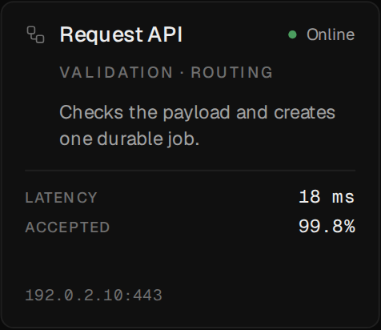
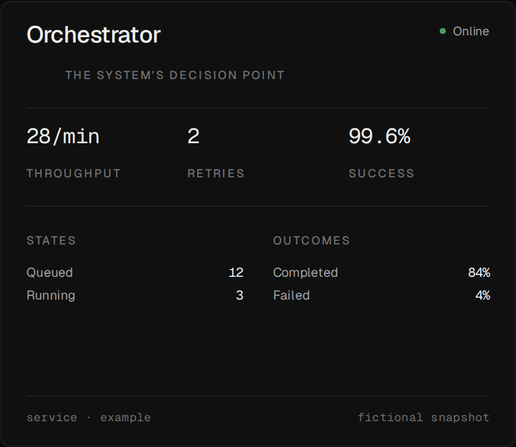
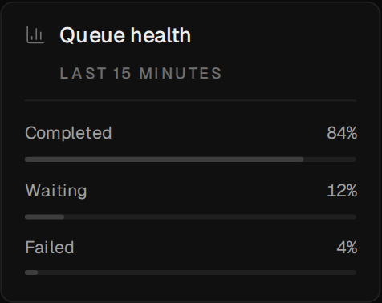
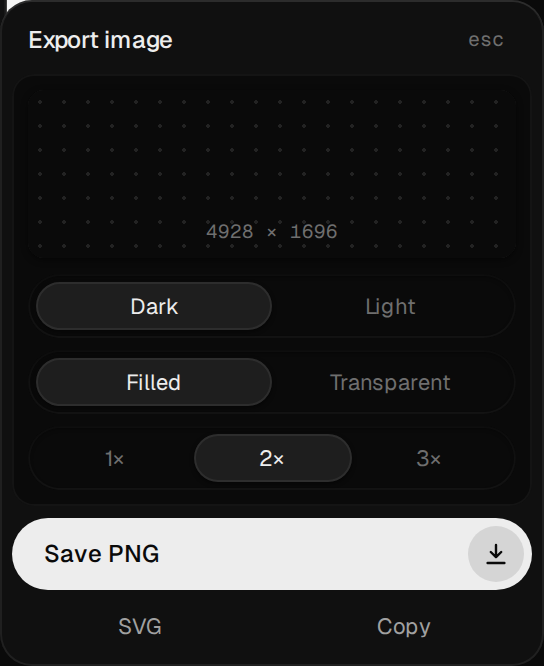

Identity apart from state
Name, role and address live in the topology. Latency, status and throughput live in state, ready to be fed by something live.

System maps for React Flow and Next.js
A starter for hand-placed maps: typed data, cards that say what they are, wires that say what they carry, and the whole canvas exported as PNG or SVG in either theme.
Free & open source · MIT · Next.js 16 · React Flow 12 · v__VERSION__
Each card kind is a React component with a fixed size, so layouts stay on a grid and the audits know what they measure. Colour says which family a card belongs to; the wire says what moves.
Name, role and address live in the topology. Latency, status and throughput live in state, ready to be fed by something live.

The primary card gets the room: headline figures, the states work moves through, and what came out the other end.

Readings print their values. Colour is never the only cue: every bar carries its figure, every status its word.


PNG or SVG at 1×, 2× or 3×, dark or light, filled or transparent — the full graph, not the part on screen. The images on this page come out of that same panel.
Positions are yours to place. Four audits check the result: wires through cards, labels crowding a plate, clipped text, and pages that scroll sideways on a phone. The first needs no browser and runs in CI.
$ npm run audit:geometry example — 8 cards · 2 frames · 7 flows · extent 2352 × 736 tightest passes: worker-accepted 144px from queue-health worker-orchestrator 180px from queue-health api-worker 180px from accepted orchestrator-archive 180px from report archive-report 256px from orchestrator no geometry problems
// a card: who it is, and where { id: "api", position: { x: 464, y: 240 }, name: "Request API", category: "Validation · routing", host: "192.0.2.10:443", icon: Workflow, }, // a wire: what it carries, and in which order { id: "api-worker", stage: 2, source: "api", target: "worker", flavor: "data", label: "job", },
No editor, no layout engine, no runtime service. A map is typed data you can review in a pull request.
topology.tsCards, frames, lanes and wiresstate.tsThe values that changeindex.tsReact Flow nodes, with sizescounts.tsEvery number, derivedClone the repository, install, and open localhost:3000/example:
Node.js 22.18 or newer. Nothing else: no database, no account.
Every green build on main publishes an image to the GitHub Container Registry:
Or docker compose up -d with the included compose.yaml — read-only, no capabilities. Add --build to serve your own map.
Copy data/example/ and app/example/, then edit the four files. The renderer never imports your data, so a second map costs a folder and a route. Drawing it with a coding agent? The react-flow skill teaches it the @xyflow/react API underneath:
The example uses example.com, 192.0.2.0/24 and 2001:db8::/32 — addresses reserved for documentation — so a fork never starts out exposing a real network.
Versioned with release-please from Conventional Commits. Each release tags the image with its version and adds a changelog entry.
Not a dashboard, not a diagram editor, not a live monitor. No analytics, no authentication, no telemetry. A map drawn once, so the next person can find their way without asking you.